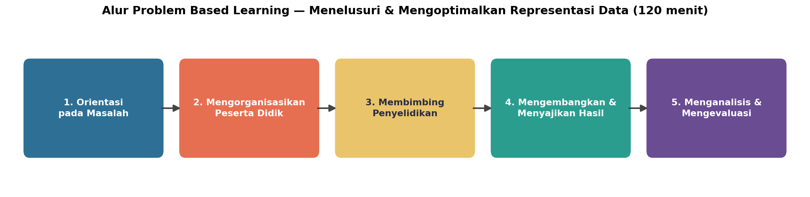
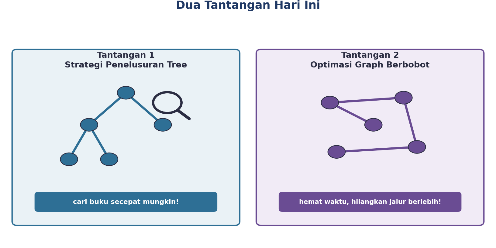
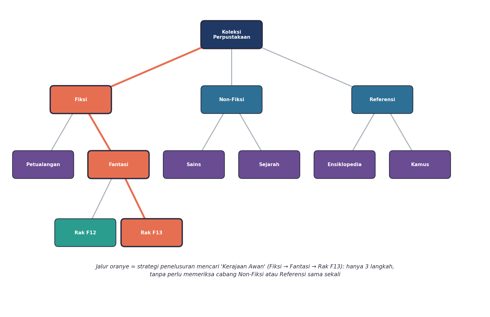
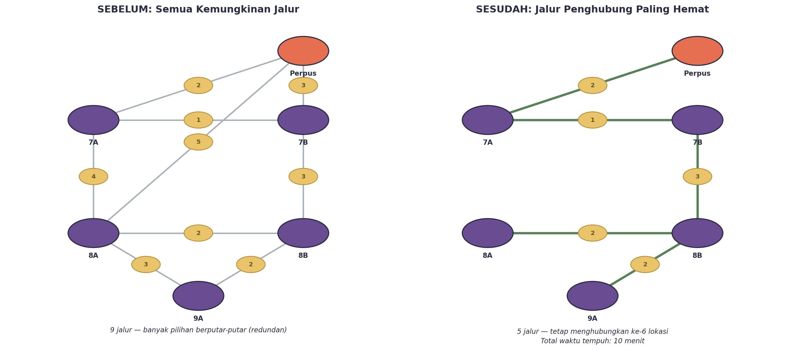
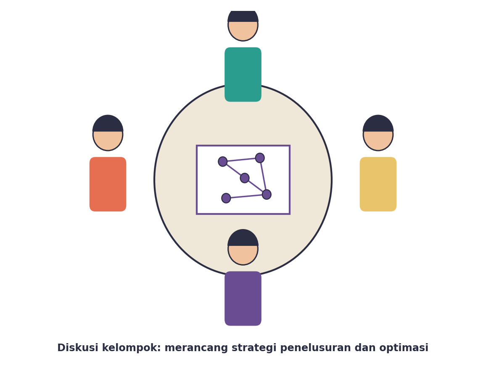
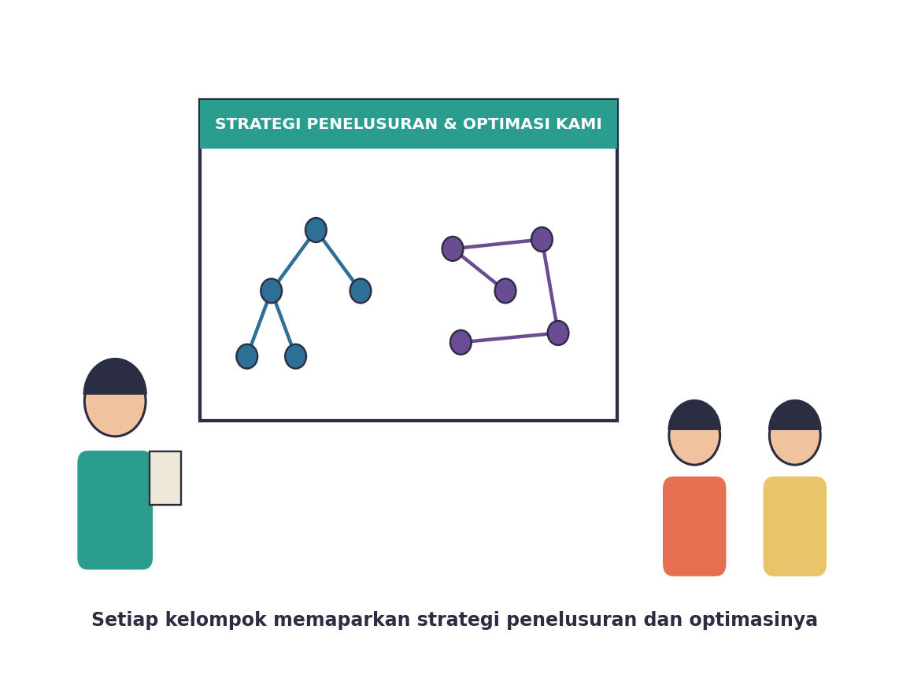

Yuk, Intip Apa yang Bakal Kamu Kuasai Hari Ini
Setelah pertemuan ini, kamu bakal bisa:
- nyusun representasi data yang lebih kompleks, sampai tiga tingkat (tree berlapis);
- ngerancang strategi penelusuran biar nemuin data tertentu secepat mungkin, tanpa ngecek semua kemungkinan satu-satu;
- ngoptimalkan/nyederhanain representasi graph berbobot biar lebih hemat, tapi tetap semua elemen saling terhubung.
Kata Kunci
Nyusun Representasi Aja, Ternyata Belum Selesai
Coba bayangin: kamu udah berhasil nyusun tree buat struktur organisasi, atau graph buat rute perjalanan. Selesai, kan? Eh, ternyata belum tentu. Coba deh mikir gini: kalau tree-nya punya RATUSAN cabang, apa kamu bakal ngecek satu-satu buat nemuin satu data doang? Atau kalau graph-nya punya BELASAN jalur yang bikin bingung, apa semua jalur itu beneran perlu dipakai?
Nah, di sinilah dua kemampuan baru yang bakal kamu kuasai hari ini: STRATEGI PENELUSURAN (biar nyari data nggak buang-buang waktu) dan OPTIMASI (biar representasi data nggak boros/berlebihan). Dua kemampuan ini yang bikin representasi data kamu bener-bener “kepake”, bukan cuma jadi gambar doang.
Hari ini kamu akan menghadapi masalah yang lebih kompleks dari pertemuan sebelumnya: perpustakaan sekolah yang makin sibuk! Ada dua tantangan sekaligus yang harus diselesaikan kelompokmu secara berurutan. Siap-siap, ya!
Kenalan Dulu, Yuk, Sama Kegiatan Hari Ini
Sama seperti pertemuan sebelumnya, hari ini kamu akan melewati lima tahap Problem Based Learning — bedanya, tahap penyelidikan dibagi jadi dua tantangan berurutan yang harus kelompokmu taklukkan.

Kenalan Sama Dua Tantangan Hari Ini
Ceritanya gini: perpustakaan sekolah kita makin ramai. Petugas perpustakaan kewalahan menghadapi dua masalah sekaligus.

| Tantangan | Masalahnya Apa? |
|---|---|
| 1. Strategi Penelusuran Tree | Koleksi buku makin banyak dan rak makin berlapis-lapis kategori. Siswa susah nemuin buku yang mereka cari dengan cepat. |
| 2. Optimasi Graph Berbobot | Program “Pojok Baca Keliling” ke beberapa kelas jadi boros waktu, karena ada banyak banget jalur yang bisa dipakai — bikin bingung mana yang paling hemat. |
Tantangan 1: Strategi Penelusuran di Tree Berlapis
Perpustakaan sekolah punya banyak buku fiksi, dikelompokkan jadi: Petualangan, Fantasi, dst — dan tiap subkategori punya beberapa nomor rak. Bayangin kalau kamu harus nyari satu judul buku tertentu, misalnya “Kerajaan Awan”, dengan cara ngecek SEMUA rak satu-satu. Lama banget, kan?
Nah, coba deh pakai strategi penelusuran: dari root (Koleksi Perpustakaan), langsung turun ke kategori yang sesuai (Fiksi), terus turun lagi ke subkategori yang sesuai (Fantasi), terus langsung ke rak yang tepat (Rak F13). Cuma TIGA langkah — tanpa perlu buka-buka rak Non-Fiksi atau Referensi sama sekali!

Ini namanya strategi penelusuran: memangkas cabang yang nggak relevan, biar kita nggak buang-buang waktu ngecek bagian yang jelas-jelas nggak mungkin ada jawabannya. Makin dalam/berlapis tree-nya, makin kerasa manfaat strategi ini!
Tantangan 2: Optimasi Graph Berbobot
Sekarang bayangin petugas perpustakaan mau bikin jadwal “Pojok Baca Keliling” ke lima kelas. Kalau digambar semua kemungkinan jalur antar-kelas (plus perpustakaan), ternyata ada SEMBILAN jalur yang bisa dipakai — banyak banget dan bikin bingung mau lewat mana.

Nah, di sinilah OPTIMASI berperan. Caranya nggak susah, kok — ikuti aja langkah-langkah ini:
- Urutkan semua jalur dari yang waktu tempuhnya PALING SEBENTAR sampai paling lama.
- Pilih jalur paling sebentar dulu, sambungkan ke petanya.
- Lanjutkan pilih jalur berikutnya yang paling sebentar — TAPI lewati kalau jalur itu bakal bikin muter balik (siklus) ke lokasi yang udah kesambung.
- Ulangi sampai SEMUA lokasi (perpustakaan + lima kelas) saling terhubung.
Hasilnya? Dari 9 jalur, ternyata cuma butuh 5 jalur buat tetap menghubungkan semua lokasi, dengan total waktu tempuh cuma 10 menit — jauh lebih hemat dan nggak bikin bingung!
Representasi data yang “boros” (banyak jalur berlebih) bikin sistem jadi rumit dan buang-buang sumber daya. Dengan optimasi, kita tetap menjaga SEMUA elemen saling terhubung, tapi pakai jalur/koneksi paling sedikit dan paling hemat. Prinsip ini dipakai juga di dunia nyata, misalnya buat merancang jaringan kabel listrik atau jaringan internet!
Aktivitas Seru: Taklukkan Dua Tantangan Bareng Kelompok!
Sekarang giliran kamu beraksi! Kelompokmu akan mengerjakan KEDUA tantangan secara berurutan: dahulukan Tantangan 1 (Penelusuran Tree), baru lanjut Tantangan 2 (Optimasi Graph).
Buat Tantangan 1, kelompokmu akan dapat data buku fiksi lengkap kategori dan raknya — susun jadi tree tiga tingkat, terus rancang strategi penelusuran buat nemuin satu judul buku tertentu secepat mungkin.
Buat Tantangan 2, kelompokmu akan dapat tabel waktu tempuh antar-kelas — gambar jadi graph berbobot, terus sederhanain jadi “Jalur Penghubung Paling Hemat” yang tetap menghubungkan semua kelas.

Waktunya Pamer Strategi dan Hasil Optimasi

Perwakilan kelompok akan memaparkan strategi penelusuran tree (berapa langkah?) dan hasil optimasi graph (berapa jalur yang tersisa, berapa total waktu tempuhnya?). Bandingkan sama kelompok lain — apakah ada yang strateginya lebih ringkas atau hasilnya lebih hemat?
Nggak masalah kalau hasil optimasimu beda sama kelompok lain — yang penting semua elemen tetap terhubung dan jalurnya masuk akal. Yang penting kamu bisa jelasin alasannya!
Bocoran Tips Biar Makin Jago
- Buat strategi penelusuran: selalu mulai dari kategori paling umum, terus makin menyempit — jangan langsung loncat ke detail sebelum yakin kategorinya benar.
- Buat optimasi graph: selalu urutkan jalur dari yang paling murah/cepat dulu, dan selalu cek apakah suatu jalur bikin siklus sebelum memutuskan memakainya.
- Setelah selesai, coba tes sendiri: kalau kamu hapus satu jalur lagi dari hasil optimasimu, apa masih ada lokasi yang kepotong/nggak terhubung? Kalau iya, berarti hasil optimasimu udah pas — jangan dikurangin lagi.
Rangkuman Singkat
- Strategi penelusuran adalah cara sistematis menelusuri tree buat nemuin data tertentu tanpa perlu ngecek semua cabang.
- Optimasi representasi data adalah proses menyederhanakan representasi (misalnya graph) biar lebih efisien, tapi tetap menjaga semua elemen saling terhubung.
- “Jalur Penghubung Paling Hemat” adalah hasil optimasi graph yang menghubungkan semua simpul dengan jumlah/total bobot ruas paling minim, tanpa siklus berlebih.
- Sistem nyata (kayak perpustakaan tadi) sering butuh GABUNGAN tree dan graph sekaligus — bukan cuma salah satu.
Cek Dulu, Udah Paham Belum?
Sebelum pertemuan ini ditutup, coba jawab dulu pertanyaan berikut sendirian.
Kamus Kecil Istilah Penting
- Strategi Penelusuran
- cara sistematis menelusuri struktur data (misalnya tree) untuk menemukan data tertentu tanpa perlu memeriksa seluruh cabang.
- Optimasi Representasi Data
- proses menyederhanakan sebuah representasi data (misalnya graph) agar lebih efisien tanpa kehilangan informasi/konektivitas penting.
- Jalur Penghubung Paling Hemat
- representasi graph hasil optimasi yang tetap menghubungkan seluruh simpul dengan jumlah/total bobot ruas paling minimum, tanpa membentuk jalur berputar (siklus).
- Tree Berlapis
- tree dengan tiga tingkat atau lebih, digunakan untuk merepresentasikan data yang lebih kompleks.
- Siklus
- jalur dalam graph yang bisa berputar kembali ke simpul yang sama; dihindari saat menyusun Jalur Penghubung Paling Hemat.